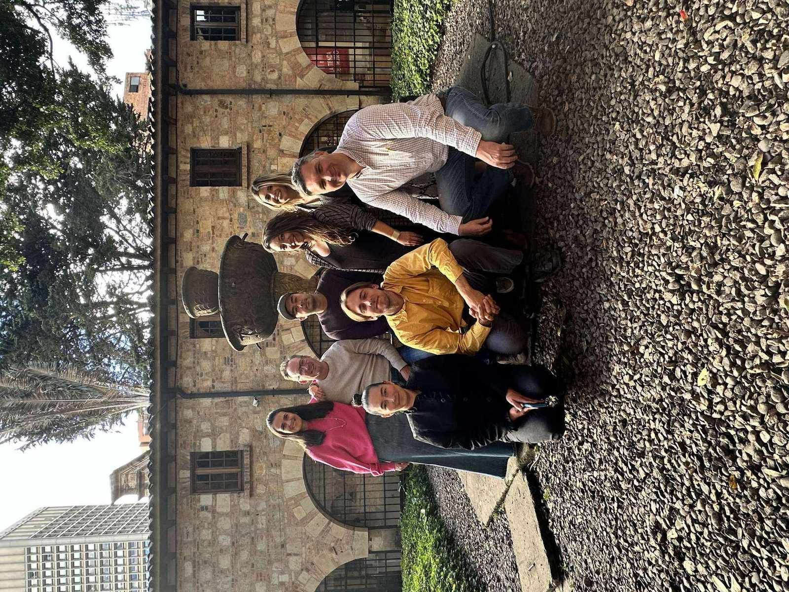
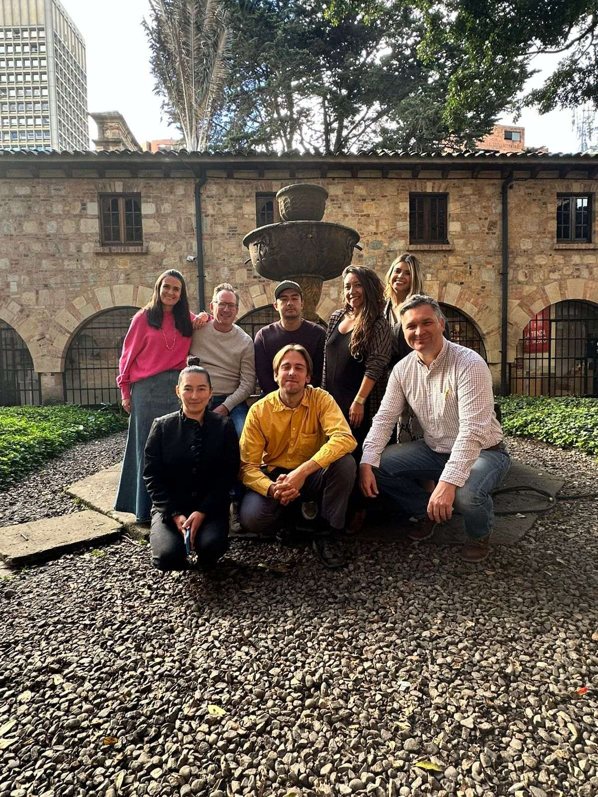
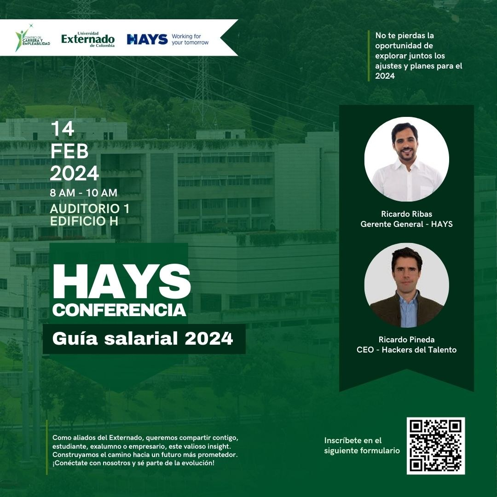
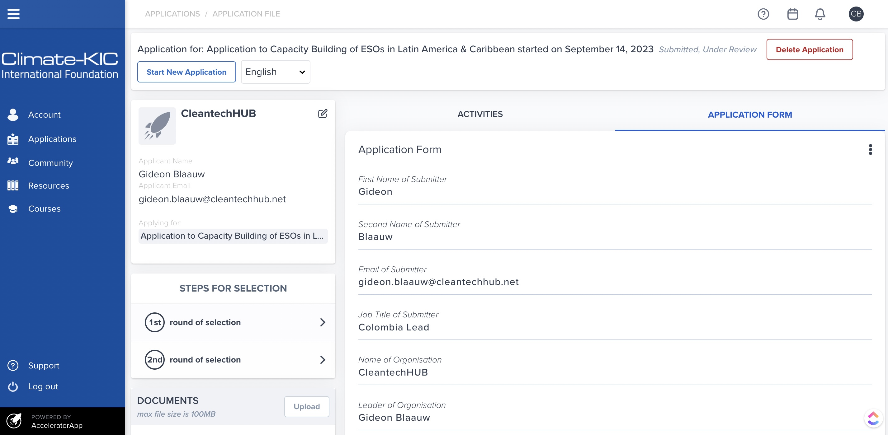
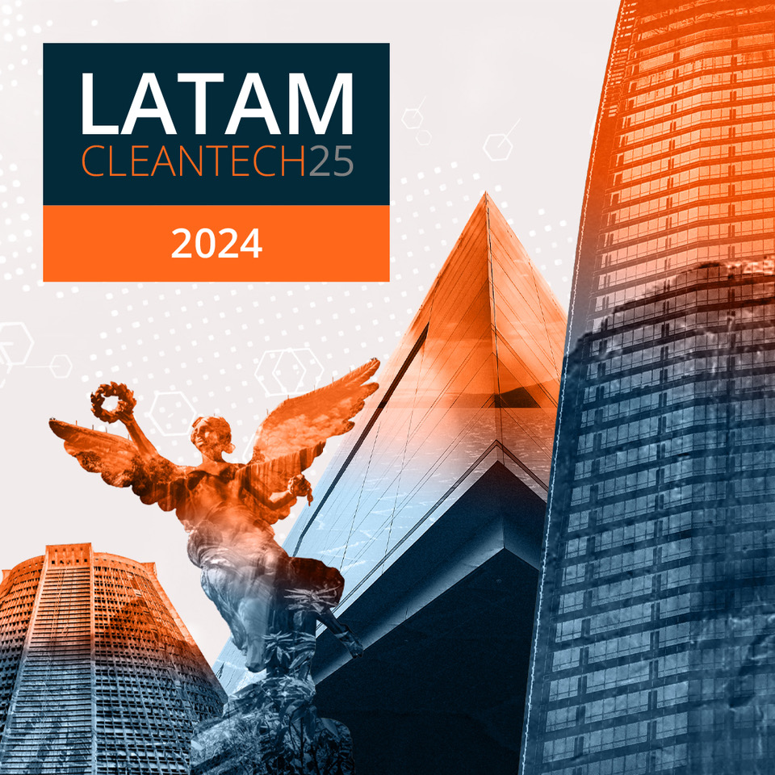
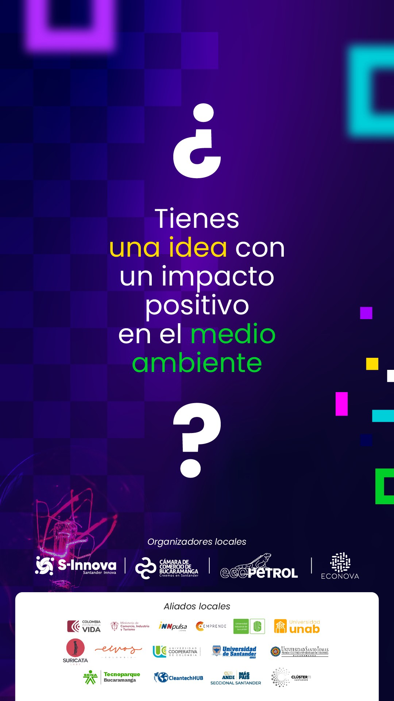
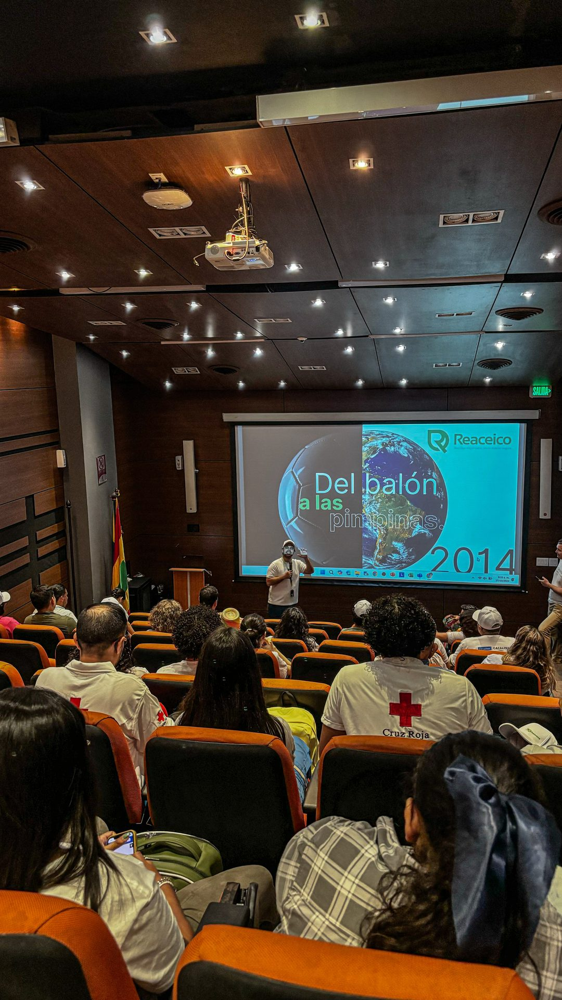

Fundación CleantechHUB
Informe 2026 a la Junta Asesora
Junta Asesora · ejecución documentada 2025–2026

Junta Asesora 4Q26
La junta revisará nueve bloques de gestión documentada en 2025–2026.
- 012026 en una frase
- 02Alianza WRI / P4G — MubOn
- 03Incubación — ClimateLaunchpad
- 04Lo que construimos — EO, Datalab, Nexus
- 05REIN Hubs
- 06Cleantech Academy
- 07Plataformas, equipo y cumplimiento
- 08Proyección 2027
- 09Decisiones y solicitudes a la Junta

2026 en una frase
Alianzas de datos e institucionales, incubación donde hubo convocatoria y plataformas digitales propias — con la marca «Inspira. Actúa. Transforma.»
Informe Junta Asesora 2026 · índice aprobado v3 (16 nov 2026)
Capítulo 2
WRI / P4G — MubOn cerró la subvención G3470 entre octubre 2024 y marzo 2026.
Alianza G3470 · 1 oct 2024 – 31 mar 2026
MubOn entregó resultados medibles al cierre de la subvención P4G en marzo de 2026.
Tras el cierre P4G, la prioridad es auditoría, SPV Axioma y continuidad comercial sin cifras no verificadas.
Ingresos brutos
69 314 USD y 9 ciudades en Colombia (brief cierre).
Convenio P4G
Tres sub-objetivos completados; productos de conocimiento entregados.
[PENDIENTE]
Estado y hallazgos auditoría BDO al 16 nov 2026 (Jennifer González / WRI).
2027
Cooperación con auditoría, SPV Axioma y continuidad comercial MubOn (sin montos no verificados).
Capítulo 3
ClimateLaunchpad 2026 documenta convocatoria nacional con Externado como coanfitrión.
Convocatoria nacional donde hubo documentación
La cohorte 8 avanza hacia la final nacional, pero faltan resultados cuantitativos verificados.
Cohorte 8
Universidad Externado como coanfitriona de la final nacional Colombia 2026.
Preparación
Visita técnica al campus y jurado en maratón de emprendimiento (ago 2026).
[PENDIENTE]
Resultados cuantitativos CLP 2025–2026 — equipos, regionales, retrasos (P04).
2027
Coordinación CEE y programas (Angélica Díaz) tras resultados verificados.

Capítulo 4
EO, Datalab y Nexus concentran lo construido en datos, vitrina y ecosistema en 2026.
EO × Externado · Datalab · Nexus (cap. 4–6)
El Observatorio de la Tierra avanza convenio y líneas operativas, pero el Otrosí sigue pendiente de firma.
Convenio marco
Firmado 3 jul 2024; vigencia cinco años (CEE × CleantechHUB).
Cuatro líneas
Datatón, Climate Data Week, Data Lab e Investigación — tagline «Observa. Actúa. Transforma.»
[PENDIENTE]
Otrosí EO firmado (P06). Resultado reunión 1 oct 2026 (P05). KPIs públicos (P08).
2027
Firmar Otrosí, validar denominación Observatorio, calendarizar Earth Data Week [PENDIENTE] (P09).
Datalab consolidó vitrina pública y preparó el datatón EO con listas internas verificadas.

Nexus registra dos conteos de actores en octubre de 2026 y aún no hay cifra pública única autorizada.
| Registro | Actores | Nota |
|---|---|---|
| Reconciliación post-PR 75 (20 oct) | 381 | Fuente sesión 20 oct |
| Tras merge PR 123 (26 oct) | 478 | 105 con prefijo co-* |
| Publicación informe | [PENDIENTE] | Conteo autorizado (P12) |
No publicar número único hasta cerrar P12; mantener doble registro.
Fuente: desks Nexus origo (20 y 26 oct 2026)
Nexus une portfolio multipaís, fichas bilingües y despliegues GitHub-first en octubre de 2026.
Colombia
Mapa de ecosistema (Leaflet/D3)
Perú
Actores e integraciones documentadas
El Salvador
Cobertura multipaís del portfolio
Fichas bilingües
Una ficha por empresa en el sitio público
Despliegue oct 2026
Ola 20–26 oct · prioridad publicación desde GitHub
PR #123
Fusión actores Colombia desplegada 26 oct 2026
Capítulo 7
REIN Hubs mantiene cinco países activos y métricas acumuladas de la red latinoamericana.
Red latinoamericana — avances 2026
El impacto REIN reportado es acumulado de la red, no exclusivo del año 2026.
En 2026 REIN avanzó sala de datos, decks institucionales y brechas en MoU universitarios.
Sala de datos
Auditoría NCUK/Pvblic oct 2026; 23 de 25 cuentas con acceso visor en Drive.
Colombia
Deck REIN × NCUK × Externado en decks.cleantechhub.net (nov 2026).
MoUs
No se hallaron MoU plenamente firmados con las cinco universidades hub (oct 2026).
2027
Cerrar brechas sala de datos, producción web y coordinación IDB/Qatar sin contactos no confirmados.

Producto digital
Cleantech Academy sigue activo, pero faltan métricas LMS verificadas para 2026.
- Curso ABC de emprendimiento climático y cohortes documentadas en informes previos.
- Actualización de ejecución y métricas 2026: [PENDIENTE] (P16) — export LMS/Moodle.
- Próximo paso cuando exista extracto con trazabilidad Drive.

Tres plataformas sostienen datos, portfolio y conocimiento operativo en 2026.
Datalab
Vitrina, laboratorio vivo, datatón EO y API de administración (cap. 5).
Nexus
Portfolio y mapa de ecosistema multipaís (cap. 6).
wiki.cleantechhub.net
Base de perfiles Datalab (BookStack).
Equipo y cumplimiento requieren cerrar transiciones de personal y matriz de riesgos 2026.
Junta
Última sesión inventariada 17 dic 2025 (4Q25, notas Drive).
[PENDIENTE]
Transiciones de roles y contratación 2026 (P18).
Ética
Programa de ética — Angélica Díaz (designación 28 feb 2024, acta votación).
[PENDIENTE]
Matriz de riesgos operativos 2026 y SST (P19).

La proyección 2027 prioriza Otrosí EO, operación de plataformas y cierre P4G.
Externado
Otrosí, Earth Data Week, documento institucional.
Datalab
Correo transaccional, Ley 1581, vitrina ampliada.
Nexus
Corpus de actores estable, PR #124, enlaces con datos públicos.
MubOn
Post-cierre, auditoría, inversión.
ClimateLaunchpad
Resultados cohorte nacional.
REIN Hubs
Web en producción, sala de datos, MoUs.
Sin votos estatutarios (Parte A → Asamblea 1Q27)
La junta debe validar alcance, fechas y cierres pendientes antes de publicar cifras.
- 1Validar alcance narrativo 2026 (sin Climathon ni Aceleración como ejecución del año).
- 2Fecha de presentación de este informe: [PENDIENTE] (P28) — Secretaría de la junta.
- 3Orientación sobre cierre del conteo Nexus (381 vs 478) antes de una cifra pública única (P12).
- 4Seguimiento del Otrosí EO con Externado (P06) y del hub REIN Colombia (P14).
- 5Resumen financiero narrativo 2025: [PENDIENTE] (P02) — cuando los estados financieros estén listos.
- 6Cooperación en el cierre de la auditoría BDO P4G si permanece abierta (P03).
Gracias · CleantechHUB — Inspira. Actúa. Transforma.
https://cleantechhub.net
Para seguimiento del informe, contacte a la representación legal documentada.
Gideon Blaauw
Representación legal (periodo documentado)
gideon.blaauw@cleantechhub.net